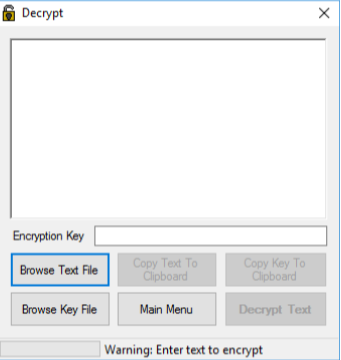
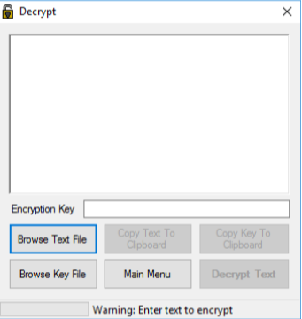

2021

Blender Bar Scene - WIP
2020
Static Builder
StaticBuilder is the successor of WebKitBuilder. It is created using Python3 and it is much
better designed. Customization is currently only available by openning the source file and
changing the variable names.
StaticBuilder is a python script that allows you to re-use HTML code throughout a website
without the need to copy-paste the re-usable parts. Think of it as a macro in C. You define
your re-usable HTML in a file and then import it to different parts of the website. when
the website is to be viewed, run StaticBuilder and all the re-usable HTML will be placed
throughout the website.
This tool encourages code re-use in static websites and increases development efficiency.
GitHub
Tutorial
Particle Graphics Engine
Written in C++ using libsdl2 and glm. This was the project I had to do for my
computer graphics course in my 3rd year of university.
The graphics engine is designed very modularly. Features can be disabled and enabled
very easily. The following features are supporting:
- Highly customizable particle emitters. All particle emitters seen in the video, (the smoke, the flare, the explosion particles) are using the same particle class, but the property values are changed.
- Basic model loading support.
- Model renderer.
- Camera system.
- Runs on Linux.
Shinobi Arcade Bonus Level Remake
This was a remake of the ninja star throwing bonus levels of the Shinobi arcade where the Shinobi
would
throw ninja stars
at the on-coming ninjas. This project was built using the Godot game engine.
This project's source code cannot be shared as it contains copyright content from SEGA. If you are
interested in gaining
access to the source code (excluding the art and sounds) then email me.
This project was created for demonstration purposes and is in no way intended to replace the
original
game.
Game Jolt
GitHub
2019
WebKitBuilder
NOTE: A new version of this program has been released, called StaticBuilder. It is recommended to
use StaticBuilder as it is faster, newer, and cross-platform. WebKitBuilder will remain up for
viewing purposes.
This project's goal was to create a way for html developers to be able to import content into their
files in an easy and painless way
that did not affect the actual website in any way.
There are a lot of reasons one may want to do this, among them being, to reuse code in an easy and
error-free way. Imagine having a simple
html page, you create a navigation bar that is going to be used throughout the website; normally,
you
would have to copy-paste the navigation
bar html and CSS code in each page. This easily becomes a nightmare when you are constantly tweaking
page elements that are common throughout
the website. With this script, all it takes is to run it and your commonly used code, is
automatically
placed throughout the website in a matter
of seconds.
This website, is in fact, created using this script. So, it's proven to work!
GitHub
Event-Talk
This web application was a combined effort between me and a group of 5 other people.
We were given complete creative freedom by the University to develop any kind of web app and
submit it at the end of our first year as a team project.
After designing some concepts for the website, and mock art, we eventually decided to create a
social media website that would be used to inform people about events that were happening near
them.
Event organizers could add events to the website, with relevant information, and then the users
could
upvote or downvote each event so it could gain popularity. Furthermore, users could also comment
on each
post about what their opinions were for the event.
The project was extremely well polished in the end and my team and I managed to surpass our
previous
expectations in terms of feature complexity and quality.
Throughout the whole experience, we never felt like we were losing control, and, we finished
the project before the deadline.
2017
Text Encryption Software
This project was written in Visual Basic for my IGCSE end of year project.
The program allows you to load a text file and an encryption key, and it will then, encrypt/decrypt
the
file using
the loaded key. This was my first useful project, and as you can imagine, it was badly written.
The whole program was written in about 4 source files (excluding the automatically generated UI
files
that Visual Studio
generates for you). Basic programming principles have been applied; however, it is not something
complicated.
 
